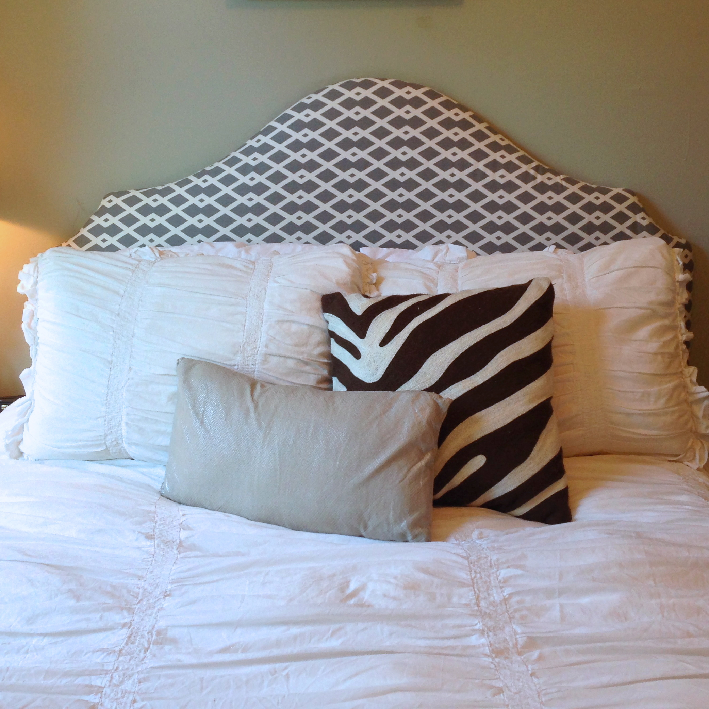
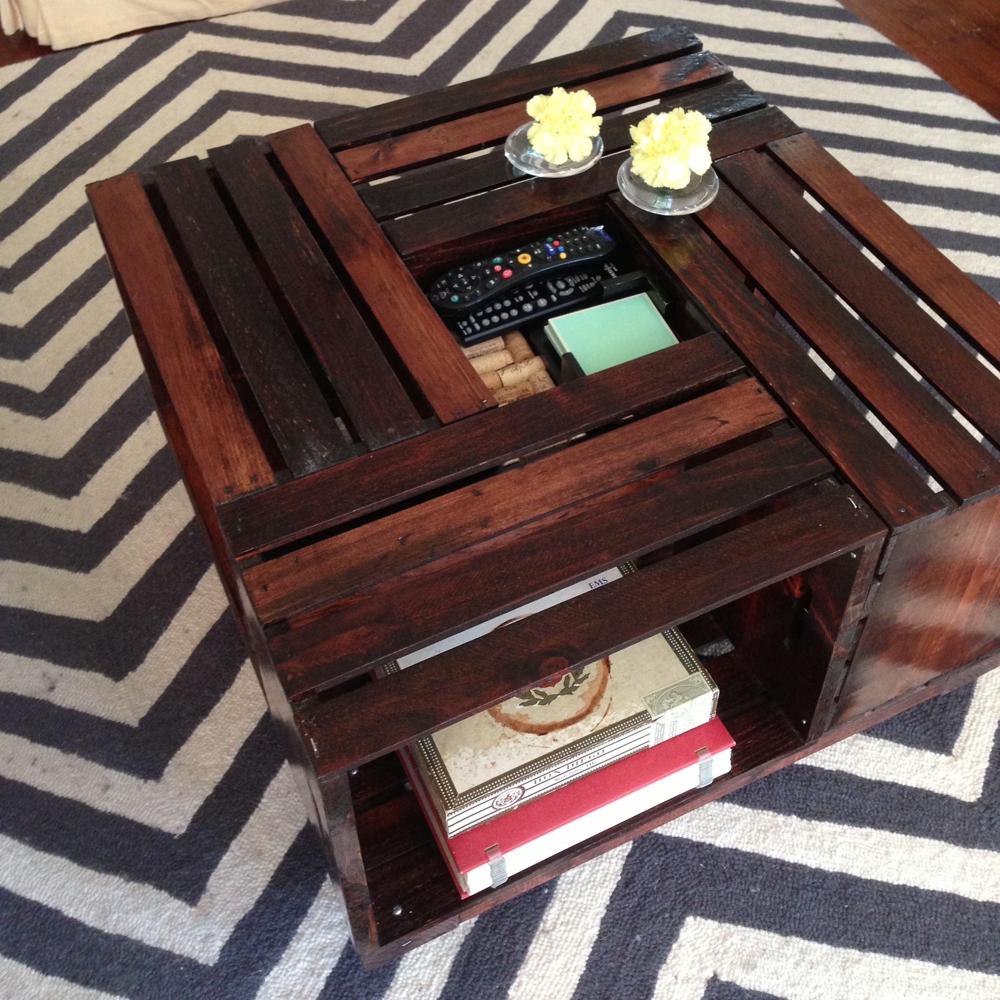
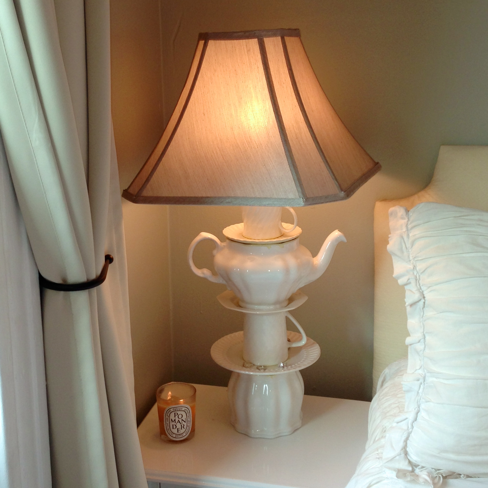
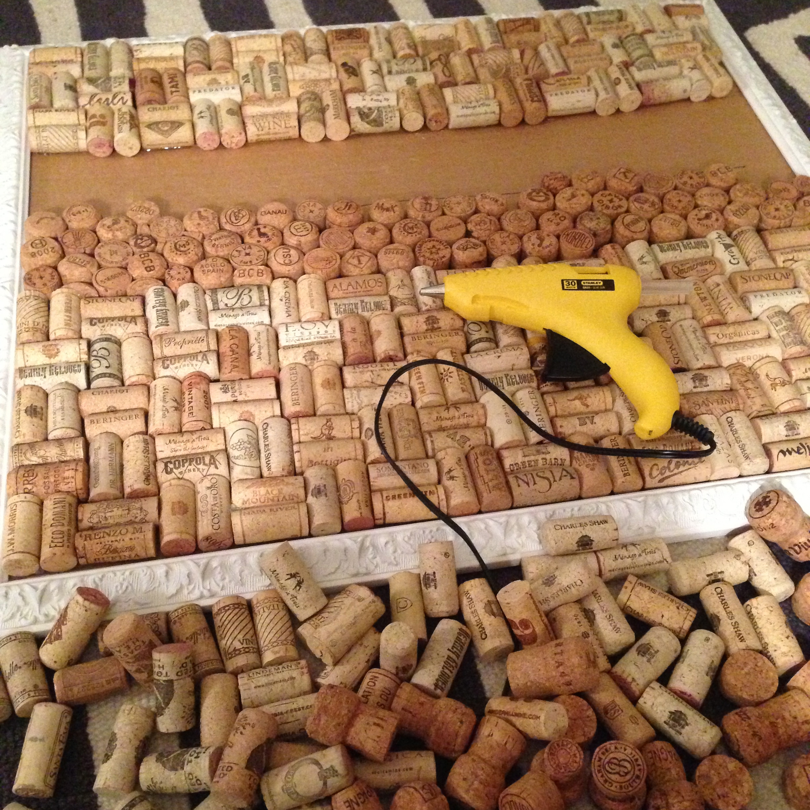
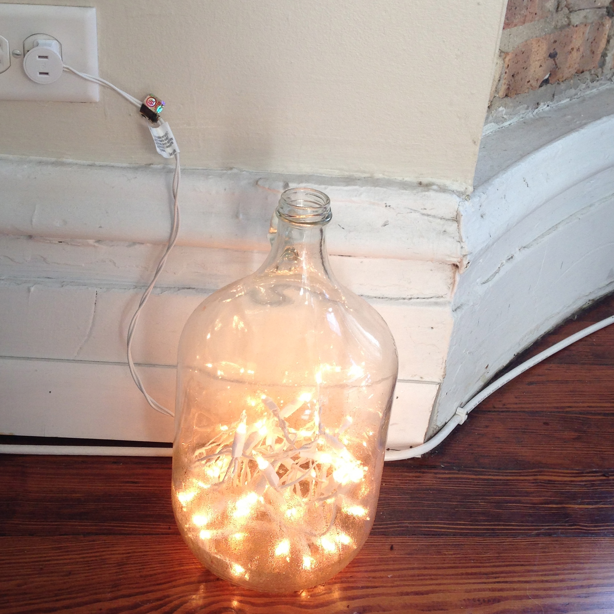
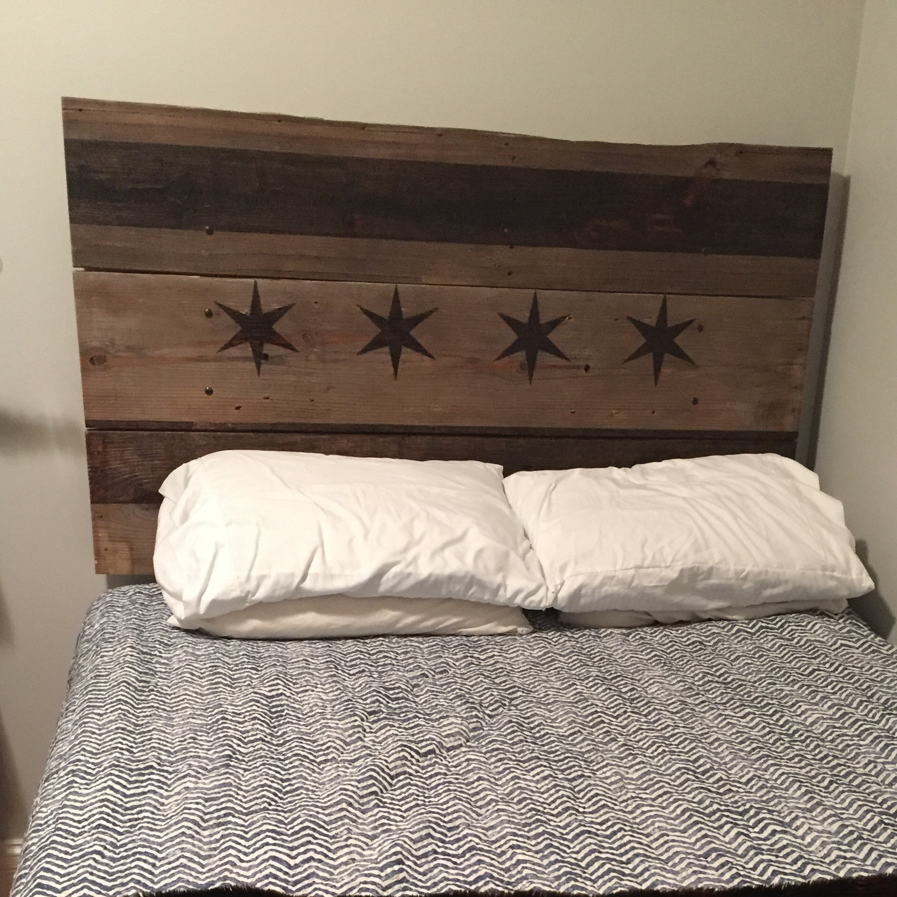
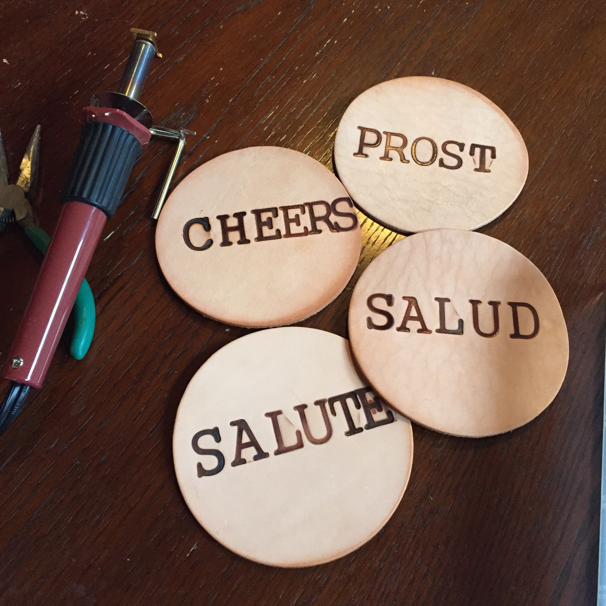
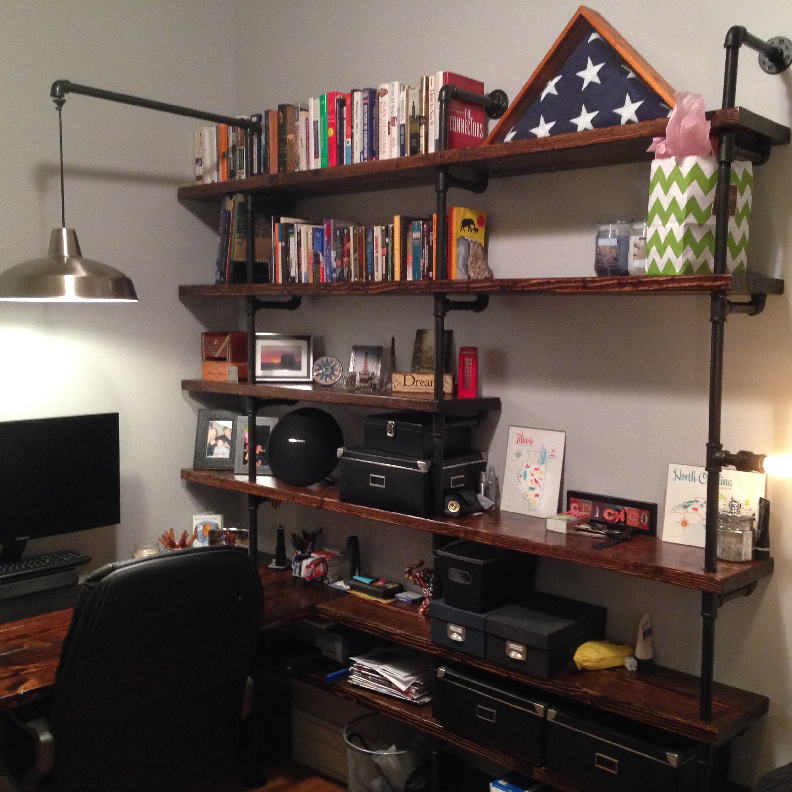
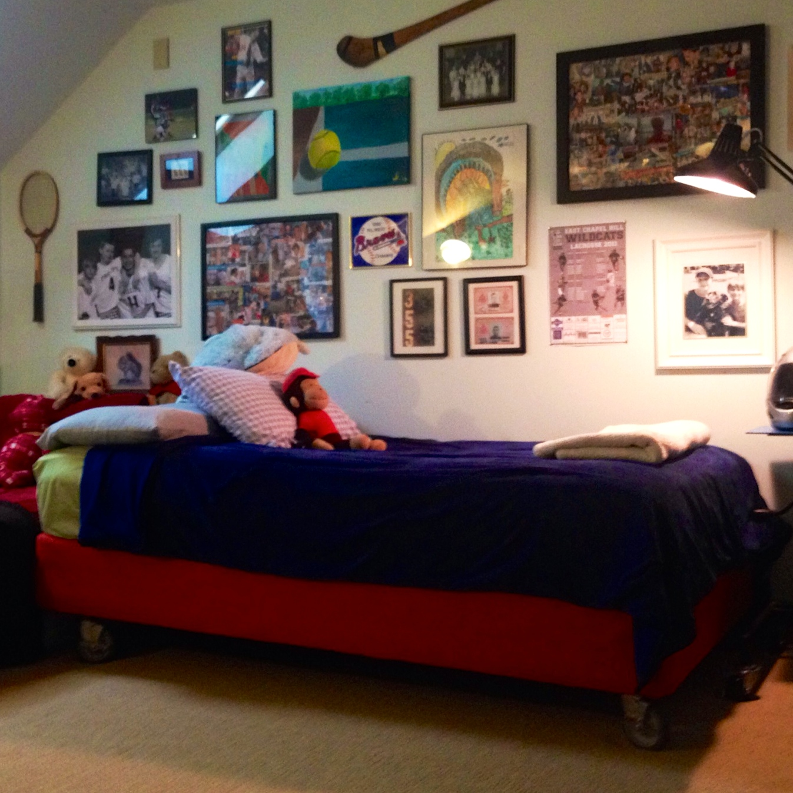

Here are some of my projects...

Upholstered Headboard
Upholstered headboard using jigsaw, wood, fabric and batting.

Coffee Table
Stained wood crates attached together on a frame and casters.

Teapot Lamp
Thrift store teapot, saucers and teacups crafted into a lamp.

Cork Board
Hundreds of wine and champagne corks fashioned into a coarkboard.

Twinkle light Cider Jugs
A Cider Jug cut with a glass drill bit and twinkle lights fed inside.

Wood Burned Chicago Headboard
Chicago flag burned into reclaimed wood and mounted on the wall.

Branded Leather Coasters
Leather coasters branded with wood/leather burning tool.
 Custom Mirror Frame
Custom Mirror Frame
Found a wicker mirror in the alley and stained and built custom frame.

Custom desk & shelving unit
Desk and shelving unit built from steel pipes and framing lumber.

Upholstered Box Spring
Box spring upholstered and framed onto large casters.